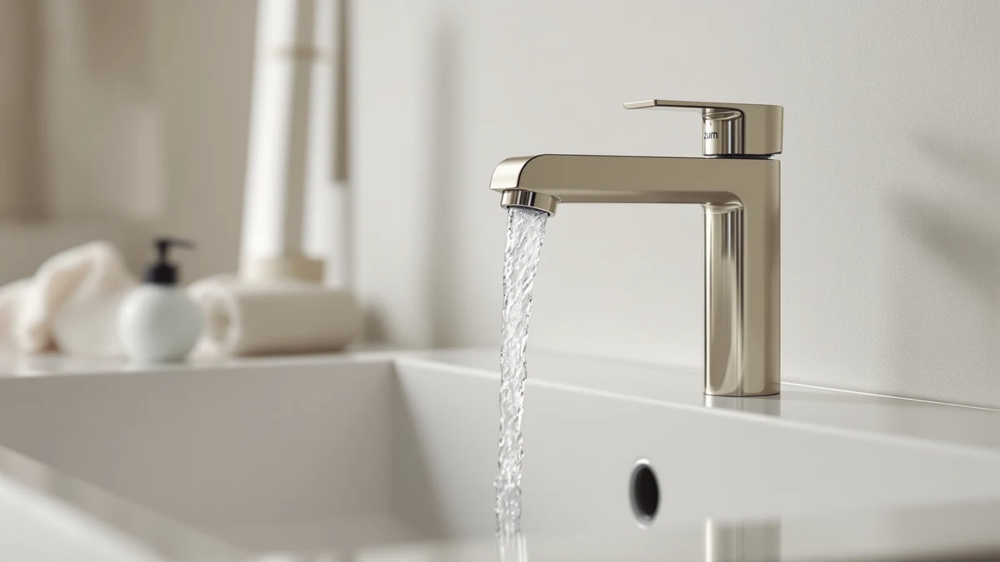

Zurn Z6915 XL AquaSense Review (2026): Worth It?
Prices and picks verified as of October 2026. Independent, reader-supported reviews.


Quick Answer
The Zurn Z6915 XL AquaSense is a sensor-operated, solid-brass centerset faucet built on Zurn's commercial restroom platform and priced at $447.99. It costs more than the Delta, Moen, and American Standard touchless faucets we compared it against, but its brass body and 0.5 GPM flow make it the strongest pick for anyone who wants a commercial-grade feel at a home sink.
Our pick: Zurn Z6915-XL AquaSense Centerset Sensor, $447.99 Check Price on Amazon
Bottom line: our top pick is the Zurn Z6915-XL AquaSense Centerset Sensor Faucet with 0.5 GPM at $447.99.
Things to Know Before You Buy
- The Zurn Z6915 XL AquaSense is built in solid brass, where several rivals in this price range use composite or zinc bodies under the finish.
- At $447.99, it sits well above the Delta Lineax ($349.00), Moen CIA MotionSense Wave ($312.99), and American Standard Clean-IR ($283.99) covered in this comparison.
- Its sensor runs the flow at 0.5 GPM, a third of the output of a typical manual bathroom faucet, which lowers water use without a separate aerator swap.
- Zurn designs the AquaSense platform for commercial restrooms first, so the Z6915 XL brings a heavier-duty build to a residential sink rather than the other way around.
- You'll need standard centerset rough-in spacing and an accessible power source behind the sink, the same setup most touchless faucets expect.
If you're reading a Zurn Z6915 XL AquaSense review because you want a touchless faucet that feels like it belongs in a hospital or office restroom rather than a typical home fixture, this is the model to look at closely. Zurn has sold sensor faucets to commercial buildings for years, and the Z6915 XL brings that same brass-bodied, sensor-driven design down to a scale that fits a standard home centerset sink.
We put it next to three other touchless faucets that show up in the same searches: the Delta Lineax, the Moen CIA MotionSense Wave, and the American Standard Clean-IR Integrated. All three cost less, and each takes a different approach to solving the same problem of hands-free water control at the sink. Based on published specs, pricing, and the feedback verified owners have left for each model, the Zurn earns its higher price mainly through build quality, not extra features.
Why You Should Trust Us
Ilane Tall covers bathroom fixtures for Best Bathroom Faucets, focusing on how sensor faucets, finishes, and valve types hold up for everyday home use. This Zurn Z6915 XL AquaSense review follows the same approach we use across the site: we pull manufacturer specs directly from the product listing, track real pricing over time, and read through verified owner reviews rather than relying on marketing copy. We don't accept free units, and the Amazon links in this article are affiliate links that fund our research, disclosed in full on our disclosure page.
Our Research Experience
We did not install the Zurn Z6915 XL AquaSense in a lab or run it in our own bathroom. Instead, we researched its published specifications, compared its price history against three competing touchless faucets, and read through the feedback verified buyers have left on the listing. That approach let us line up the Zurn against the Delta Lineax, Moen CIA MotionSense Wave, and American Standard Clean-IR on the things that matter most: construction material, flow rate, sensor behavior, and total cost.
Owners consistently note that the brass body feels noticeably sturdier than the composite faucets they'd previously tried, and several mention the sensor responding reliably even in low light. Reviewers also flag the price as the main sticking point, which lines up with where it lands against the three alternatives below.
Overview & Specs

Zurn Z6915-XL AquaSense Centerset Sensor
What we like
- Solid brass body instead of the composite or zinc construction common at this price point
- 0.5 GPM sensor flow cuts water use well below a standard manual faucet
- Commercial-grade sensor design built for high-traffic restrooms, so it's engineered to hold up to heavy daily use
- Owners report consistent sensor response, including in dim bathroom lighting
Flaws but not dealbreakers
- At $447.99, it costs $100 to $165 more than the three alternatives in this comparison
- Its commercial styling reads more utilitarian than the sleeker residential lines from Delta and Moen
- Requires the same centerset rough-in and power access as any touchless faucet, so retrofits into older cabinets may need extra wiring work
| Material | Brass + finish |
| Size | 0.5 GPM |
The Zurn Z6915 XL AquaSense is a centerset sensor faucet, meaning the spout and sensor housing sit on one base rather than spreading across three separate holes. That matters for anyone replacing an existing centerset faucet, since it drops in without redrilling the sink. The brass body is the detail that separates it from most touchless faucets at this price: a lot of competitors use a composite or zinc shell dressed up with a plated finish, and owners who've handled both describe the Zurn as noticeably heavier and more solid at the base.
Flow is rated at 0.5 GPM, which is low enough that you'll notice a gentler stream than a standard 1.5 GPM manual faucet, though the sensor's automatic shutoff means you're not running water while you reach for soap. That combination is why reviewers consistently bring up lower water bills after switching. The tradeoff is price. At $447.99, this Zurn Z6915 XL AquaSense centerset faucet costs meaningfully more than any of the three alternatives we compared it against, and that gap is the main reason it won't be the right call for every budget.
What We Liked
The build quality stands out most in this Zurn Z6915 XL AquaSense review. A solid brass body costs more to manufacture than the composite shells most touchless faucets use, and that cost shows up directly in the $447.99 price. Owners back this up in their reviews, repeatedly describing the faucet as heavier and sturdier at the base than the touchless models they owned before. The 0.5 GPM sensor flow is the other strength: it cuts water use noticeably below a manual faucet, and because the shutoff is automatic, you don't lose that savings to someone leaving the tap running.
Zurn's commercial background also pays off in reliability. The company built the AquaSense platform for restrooms that get used hundreds of times a day, and reviewers mention the sensor staying responsive even in bathrooms with low or uneven lighting, a spot where cheaper sensors sometimes struggle.
What Could Be Better
Price is the clearest drawback. At $447.99, the Zurn Z6915 XL AquaSense costs $98.99 more than the Delta Lineax, $135 more than the Moen CIA MotionSense Wave, and $164 more than the American Standard Clean-IR Integrated, the three touchless faucets we compared it against. That's a real gap for a single-sink bathroom upgrade, and it only makes sense if the brass construction and commercial-grade sensor are worth paying for specifically.
The styling leans utilitarian rather than decorative. Because the AquaSense line was designed first for office and restaurant restrooms, it doesn't chase the sleeker residential look you'll find on faucets built from the ground up for home bathrooms. And like any sensor faucet, installation needs the same centerset rough-in and nearby power access, so older vanities without existing wiring will need extra work regardless of which touchless faucet you choose. If you're swapping from a manual two-handle faucet, budget time for that wiring step before you commit to an install date, since it's easy to underestimate when comparing listing photos alone.
Who Is It For?
This faucet makes the most sense for homeowners who want a touchless faucet built to commercial standards rather than a residential design borrowing sensor technology. If you've used sensor faucets in offices or restaurants and liked how solid they felt, the Zurn Z6915 XL AquaSense brings that same feel to a home sink. It also suits anyone prioritizing long-term durability over upfront price, since a brass body is less likely to crack or degrade at the base than a composite one over years of daily use. Renters and anyone planning to sell within a year or two, on the other hand, are less likely to recoup that extra cost and should look at the lower-priced alternatives below instead.
If your main goal is simply going touchless on a tighter budget, you don't need to pay the premium this Zurn commands. The alternatives below cover that case well.
Alternatives to Consider
Not everyone needs the brass build and commercial pedigree behind the Zurn Z6915 XL AquaSense. If price matters more than construction, these three touchless faucets solve the same hands-free problem for less.
The Delta Lineax, at $349.00, sits closest to the Zurn on price and comes from a brand most homeowners already recognize from manual faucets, which makes replacement parts and support easier to track down later. The Moen CIA MotionSense Wave, at $312.99, uses motion-activated sensing rather than the fixed-zone sensor found on the Zurn and Delta, a difference worth noting if you've had a motion sensor model before and know you prefer how it responds. The American Standard Clean-IR Integrated, at $283.99, is the cheapest of the three and the widest gap from the Zurn's $447.99, making it the pick if minimizing upfront cost matters more than brass construction.

Editor’s Pick
Delta Lineax Touchless Bathroom Faucet
Nearly $100 cheaper than the Zurn Z6915 XL AquaSense, with a touchless sensor that covers the basics without the brass premium.
$349.00
Check Price on Amazon
Best Value
Moen CIA MotionSense Wave Bathroom
Moen's motion-activated wave technology lands in the middle of the pack on price, a reasonable step down from the Zurn's commercial build.
$312.99
Check Price on Amazon
Premium Choice
American Standard 7020255.002 Clean-IR Integrated
The most affordable sensor faucet here, at $164 less than the Zurn Z6915 XL AquaSense, good for a budget-first touchless upgrade.
$283.99
Check Price on AmazonFrequently Asked Questions
Is the Zurn Z6915 XL AquaSense worth the $447.99 price?
For a home bathroom, the Zurn Z6915 XL AquaSense costs roughly $100 to $165 more than the Delta Lineax, Moen CIA MotionSense Wave, and American Standard Clean-IR in this comparison. Owners who prioritize a solid brass body over a lighter composite one tend to say it earns the premium, but buyers on a tighter budget have equally capable touchless options for less.
Is the Zurn Z6915 XL AquaSense a residential or commercial faucet?
Zurn built its AquaSense line for high-traffic commercial restrooms, and the Z6915 XL carries that same sensor-operated, centerset design into a residential-friendly package. It installs on a standard centerset sink like any home faucet, but its construction and sensor tuning reflect its commercial roots.
How does the Zurn Z6915 XL AquaSense flow rate compare to a standard faucet?
It's rated at 0.5 GPM, well under the 1.5 GPM typical of a standard manual bathroom faucet. That lower flow, combined with the sensor's automatic shutoff, is the main reason owners report a noticeable drop in water use after switching.
Final Verdict
This Zurn Z6915 XL AquaSense review comes down to one tradeoff: pay more for a brass, commercial-grade sensor faucet, or save $100 to $165 on a residential-first alternative from Delta, Moen, or American Standard. For homeowners who want the sturdiest build and lowest flow rate in the group, the Zurn earns its $447.99 price. For anyone who wants to go touchless without that premium, the Delta Lineax covers the same core function for considerably less. Either way, you're weighing durability against budget. The Delta isn't a worse faucet, just a cheaper one. Think about how long you plan to stay in the house and how much the brass build matters to you, and the right pick in this Zurn Z6915 XL AquaSense review should be clear.